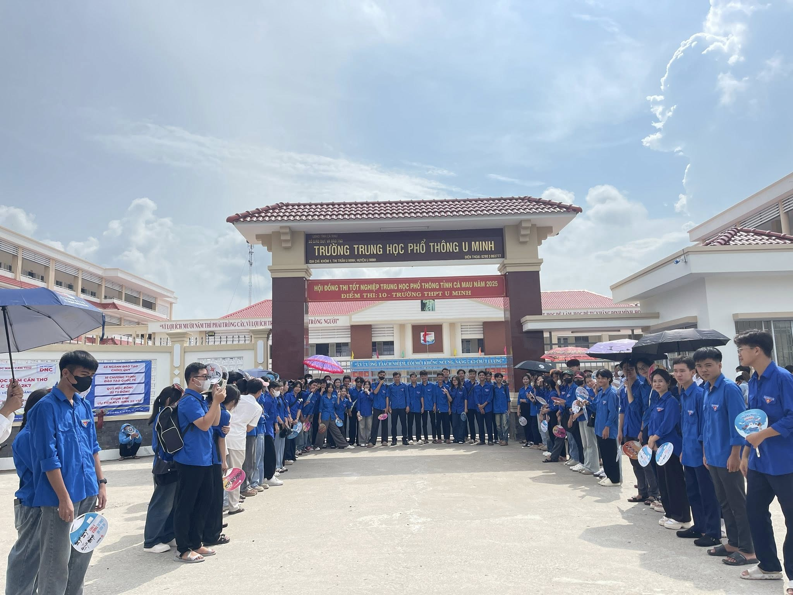
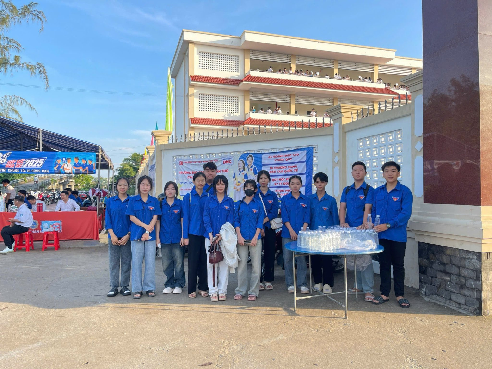
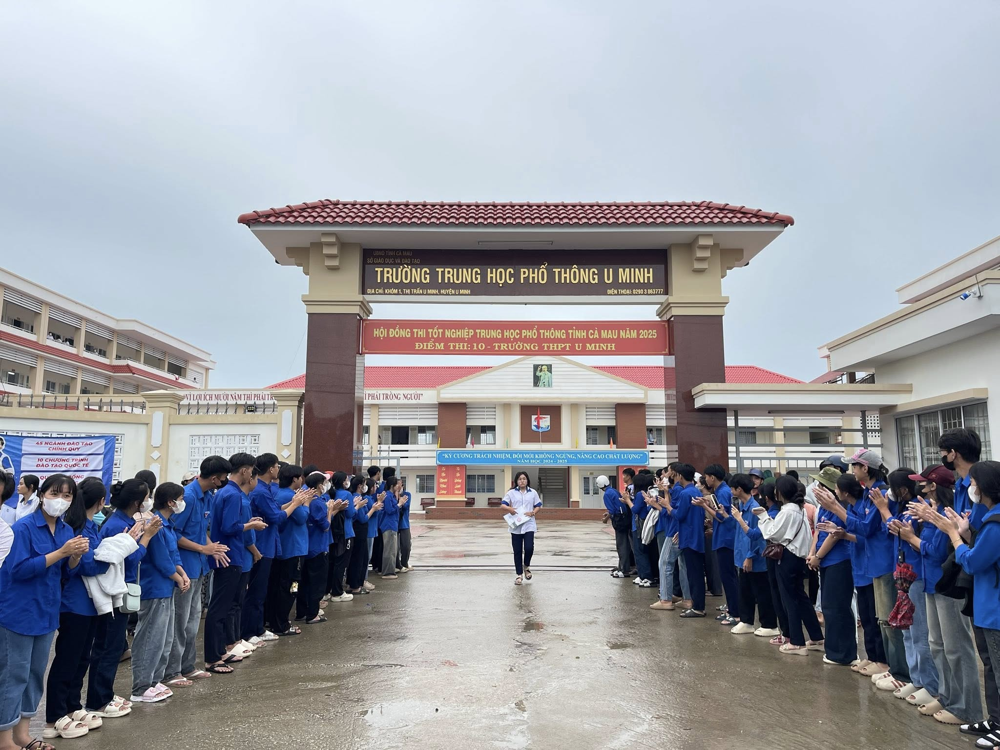
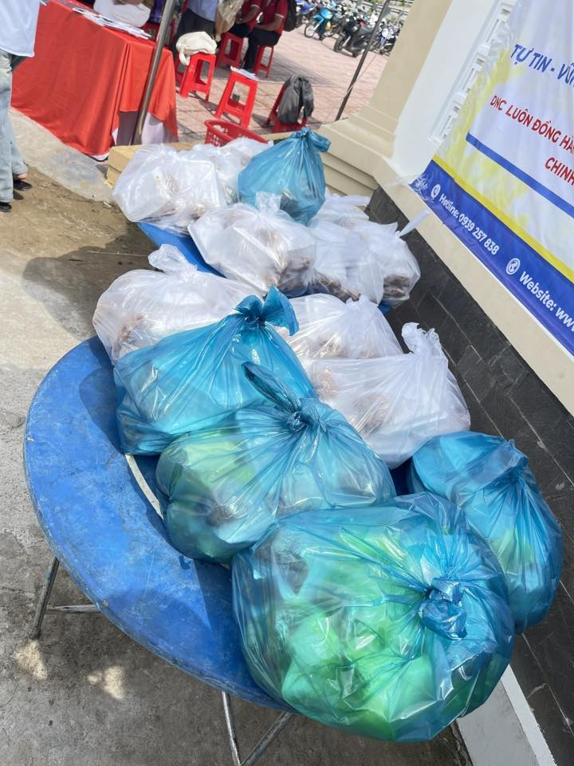

← QUAY LẠI TRANG HOẠT ĐỘNG
Nắng tháng sáu dẫu có gắt, cũng không thể làm vơi đi những nụ cười rạng rỡ và nhiệt huyết tuổi trẻ của đội tình nguyện viên Khánh Lâm.

Đội tình nguyện tiếp sức mùa thi
Đội hình "Tiếp sức mùa thi" trường THPT Khánh Lâm đã sẵn sàng từ rất sớm để đón các sĩ tử.
Kỳ thi tốt nghiệp THPT Quốc gia luôn là khoảng thời gian căng thẳng nhất đối với các bạn học sinh khối 12. Thấu hiểu những áp lực và lo âu đó, chiến dịch "Tiếp sức mùa thi" của trường THPT Khánh Lâm đã ra quân với hàng chục tình nguyện viên mang màu áo xanh, áo cam rực rỡ. Ngay từ sáng sớm tinh mơ, khi cổng trường thi chưa mở, các trạm hỗ trợ đã được dựng lên tươm tất với đầy đủ nước suối mát lạnh, quạt giấy, khăn lạnh và cả những vật dụng văn phòng phẩm dự phòng.

Phát nước cho thí sinh

Thí sinh đầu tiên hoàn thành bài thi sớm nhất
Những chai nước mát lạnh và cái đập tay truyền động lực "Thi tốt nhé!".
Không chỉ làm nhiệm vụ phát nước hay hướng dẫn phòng thi, các tình nguyện viên còn phối hợp cùng lực lượng chức năng phân luồng giao thông, đảm bảo an ninh trật tự trước cổng trường. Đẹp nhất có lẽ là khoảnh khắc các bạn đứng thành hai hàng, vỗ tay và hô vang những khẩu hiệu cổ vũ tinh thần khi các sĩ tử bước ra khỏi phòng thi. Những cái ôm chia sẻ, những nụ cười động viên đã xua tan đi phần nào cái nóng oi ả và sự mệt mỏi sau những giờ làm bài căng não.

Hỗ trợ suất ăn trưa cho thí sinh
Chiến dịch "Tiếp sức mùa thi" không chỉ là một hoạt động bề nổi, mà là minh chứng rõ nét nhất cho tinh thần tương thân tương ái, sự đoàn kết của các thế hệ học sinh trường THPT Khánh Lâm. Chúc cho tất cả các "cá chép" khối 12 của chúng ta sẽ "hóa rồng" rực rỡ, vượt vũ môn thành công, đáp lại niềm tin yêu và sự đồng hành của cả một hậu phương vững chắc!
☀️ 💦 💯
-- Rực cháy mùa hè tình nguyện --